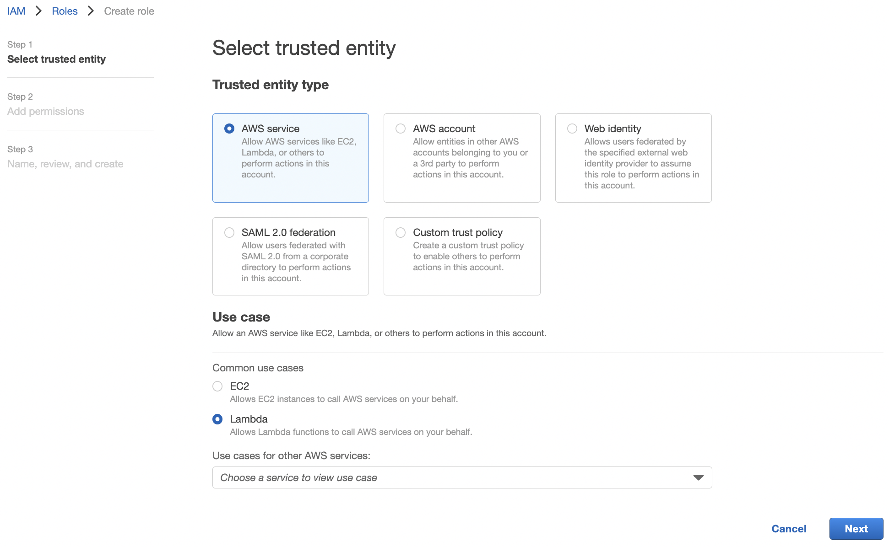
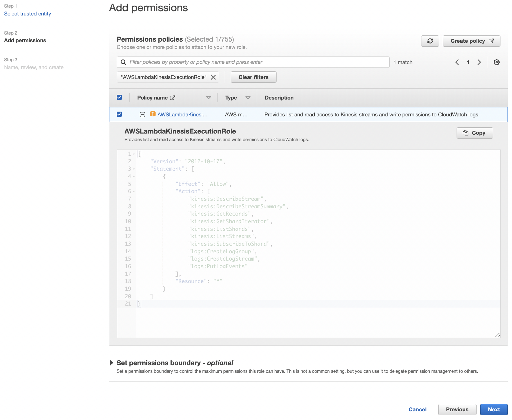
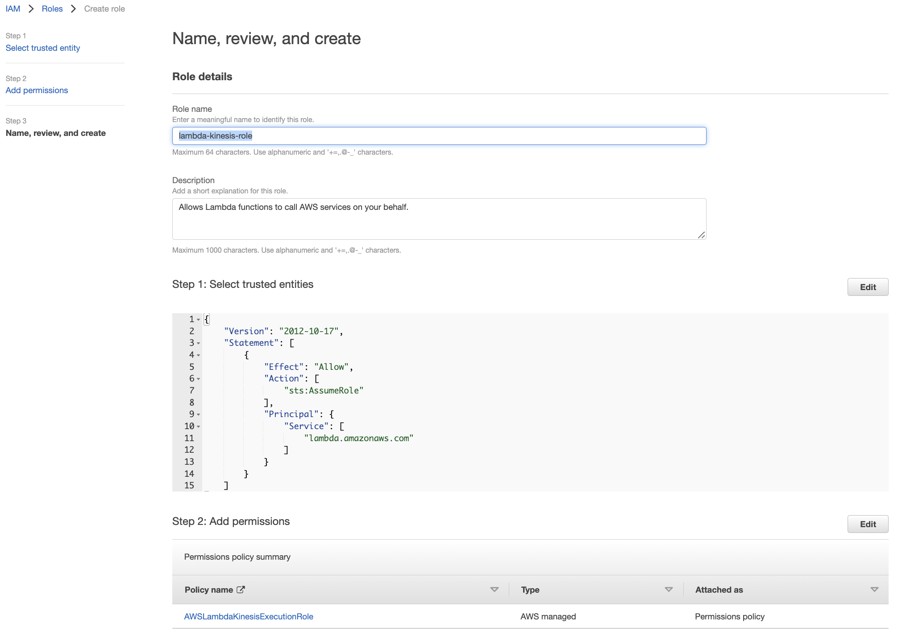

Model Deployment
Contents
Model Deployment¶


𝗔𝘁𝘁𝗿𝗶𝗯𝘂𝘁𝗶𝗼𝗻: Notes for Module 4 of the MLOps Zoomcamp (2022) by DataTalks.Club.
Introduction¶
In this module, we will look into deploying the ride duration model which has been our working example in the modules. Deploying means that other applications can get predictions from our model. We will look at three modes of deployment: online deployment, offline or batch deployment, and streaming.
In online mode, our service must be up all the time. To do this, we implement a web service which takes in HTTP requests and sends out predictions. In offline or mode, we have a service running regularly, but not necessarily all the time. This can make predictions for a batch of examples that runs periodically using workflow orchestration. Finally, we look at how to implement a streaming service, i.e. a machine learning service that listens to a stream of events and reacts to it using AWS Kinesis and AWS Lambda.
Deploying models with Flask and Docker¶
In this section, we develop a web server using Flask for serving model predictions. The model is obtained from an S3 artifacts store and predicts on data sent to the service by the backend. We will containerize the application using Docker. This container can be deployed anywhere where Docker is supported such as Kubernetes and Elastic Beanstalk.
Packaging modeling code¶
We will collect code around our models into a ride_duration package that will be uploaded to PyPI (hence can be installed using pip). Having a model package ensures smooth integration with the Flask API since we have the same code for training, testing, and inference. Ideally, we should also use the same environment for each of these phases and this can be done by using Pipenv.
Also, packaging makes imports just work. For consistency, we will also use this package for our batch scoring workflow. The directory structure of our project would look like the following. Notice the nice separation between model code, application code, and deployment code.
deployment/
├── app/
│ └── main.py
├── ride_duration/
│ ├── __init__.py
│ ├── predict.py
│ ├── utils.py
│ └── VERSION
├── .env
├── Dockerfile
├── Pipfile
├── MANIFEST.in
├── Pipfile.lock
├── setup.py
├── test.py
├── train.py
└── pyproject.toml
First we create setup.py and pyproject.toml for packaging. For the setup module, we only have to change the package metadata. Setting REQUIRES_PYTHON to ~=3.9.0 since some packages do not work with the latest version. All imports made in the module scripts are gathered in INSTALL_REQUIRES which contains abstract requirements minimally needed to run the package. This is a bit different from a requirements file which lists pinned versions for the purpose of achieving repeatable installations of a complete environment.
# Package meta-data.
NAME = "ride-duration-prediction"
PACKAGE_NAME = "ride_duration"
DESCRIPTION = "Predicting ride duration for TLC Trip Record Data."
URL = "https://particle1331.github.io/inefficient-networks/notebooks/mlops/04-deployment/notes.html"
EMAIL = "particle1331@gmail.com"
AUTHOR = "Ron Medina"
REQUIRES_PYTHON = ">=3.9.0,<3.10"
INSTALL_REQUIRES = [
"scikit-learn==1.0.2",
"mlflow>=1.26.1,<1.27.0",
"pandas>=1.4.3,<1.5.0",
"joblib>=1.1.0,<1.2.0"
]
LICENSE = "MIT"
TROVE_CLASSIFIERS = [
# Full list: https://pypi.python.org/pypi?%3Aaction=list_classifiers
"License :: OSI Approved :: MIT License",
"Programming Language :: Python :: 3.9",
]
The other one just specifies the build system to use:
[build-system]
requires = ["setuptools>=42.0", "wheel"]
build-backend = "setuptools.build_meta"
Additionally we include MANIFEST.in file to specify the files included in the source distribution of the package. The full list can be viewed in the SOURCES.txt file of the generated egg-info folder after package build.
include ride_duration/*.py
include ride_duration/VERSION
recursive-exclude * __pycache__
recursive-exclude * *.py[co]
Setting up the environment with Pipenv¶
For dependency management, we will use Pipenv. Here we specify the path to the Python interpreter that the Pipenv environment will use. Recall that an easy way of installing specific versions of Python is through conda so we use that:
(base) ubuntu@ip-172-31-24-183:~$ conda activate py39
(py39) ubuntu@ip-172-31-24-183:~$ which python
/home/ubuntu/anaconda3/envs/py39/bin/python
Deactivate the conda environment and navigate to the project root folder. Pointing to this path when activating the environment:
pipenv shell --python=/home/ubuntu/anaconda3/envs/py39/bin/python
This generates a Pipfile which supersedes the usual requirements file and also a Pipfile.lock containing hashes of downloaded packages that ensure reproducible builds. Another method is to call pipenv install on a folder with an existing valid Pipfile. To exit the virtual environment, we simply call exit.
Dependencies. Pipenv automatically updates the Pipfile when installing dependencies:
pipenv install scikit-learn==1.0.2 flask pandas mlflow boto3
Dev dependencies. Installing the local model package and other development dependencies:
pipenv install --dev -e .
pipenv install --dev requests
Jupyter. To make this available as a kernel in Jupyter notebook or VS Code:
pipenv install --dev jupyter notebook
pipenv run python -m ipykernel install --user --name=`basename $VIRTUAL_ENV`
Our Pipfile should now look as follows. Note that ride-duration-prediction is installed in editable mode since the package code is still in development (just so imports work everywhere).
[[source]]
url = "https://pypi.org/simple"
verify_ssl = true
name = "pypi"
[packages]
scikit-learn = "==1.0.2"
flask = "*"
pandas = "*"
mlflow = "*"
boto3 = "*"
[dev-packages]
ride-duration-prediction = {editable = true, path = "."}
jupyter = "*"
notebook = "*"
requests = "*"
[requires]
python_version = "3.9"
Secrets. AWS credentials and other environmental variables are saved in a .env file in the same directory as Pipfile. These are automatically detected and loaded by Pipenv when calling pipenv shell. But the shell must be restarted whenever the .env file is modified to load the changes.
# .env
EXPERIMENT_ID=1
RUN_ID=f4e2242a53a3410d89c061d1958ae70a
AWS_ACCESS_KEY_ID=A*************LI
AWS_SECRET_ACCESS_KEY=N*********************+9
Package modules¶
In the following module, define helper functions for model training and inference. This includes the usual load_training_dataframe function which creates the target features (ride duration in minutes) and filters it to some range, i.e. [1, 60]. This function is used for creating training and validation datasets. The other function prepare_features is used for feature engineering.
def load_training_dataframe(file_path, y_min=1, y_max=60):
"""Load data from disk and preprocess for training."""
# Load data from disk
data = pd.read_parquet(file_path)
# Create target column and filter outliers
data['duration'] = data.lpep_dropoff_datetime - data.lpep_pickup_datetime
data['duration'] = data.duration.dt.total_seconds() / 60
data = data[(data.duration >= y_min) & (data.duration <= y_max)]
return data
def prepare_features(input_data: Union[list[dict], pd.DataFrame]):
"""Prepare features for dict vectorizer."""
X = pd.DataFrame(input_data)
X['PU_DO'] = X['PULocationID'].astype(str) + '_' + X['DOLocationID'].astype(str)
X = X[['PU_DO', 'trip_distance']].to_dict(orient='records')
return X
Next we look at the predict module of our package. This contains two functions: one for loading the model and another for making predictions with the model. The load_model function loads a model directly from the S3 artifacts store:
def load_model(experiment_id, run_id):
"""Get model from our S3 artifacts store."""
source = f"s3://mlflow-models-ron/{experiment_id}/{run_id}/artifacts/model"
model = mlflow.pyfunc.load_model(source)
return model
To avoid having to load the preprocessor separately from the artifacts store, we train models that are pipelines of the following form (see Appendix below):
pipeline = make_pipeline(
DictVectorizer(),
RandomForestRegressor(**params, n_jobs=-1)
)
Our models expect as input prepare_features(data) where data can be a DataFrame with rows containing ride or a list of ride features dictionaries (e.g obtained as a JSON payload). So we define the following function to help with inference:
def make_prediction(model, input_data: Union[list[dict], pd.DataFrame]):
"""Make prediction from features dict or DataFrame."""
X = prepare_features(input_data)
preds = model.predict(X)
return preds
Testing out the load_model() function:
import os
from ride_duration.predict import load_model
model = load_model(os.getenv("EXPERIMENT_ID"), os.getenv("RUN_ID"))
model
mlflow.pyfunc.loaded_model:
artifact_path: model
flavor: mlflow.sklearn
run_id: f4e2242a53a3410d89c061d1958ae70a
Fig. 20 Artifacts store for model runs of experiment 1.¶
As an alternative, we can also load the latest production version directly from the model registry (no need to specify a run and experiment ID) using the tracking server. One issue is that starting of the Flask server can fail whenever the request the tracking server is down.
TRACKING_URI = f"http://{TRACKING_SERVER_HOST}:5000"
# Fetch production model from client
mlflow.set_tracking_uri(TRACKING_URI)
client = MlflowClient(tracking_uri=TRACKING_URI)
prod_model = client.get_latest_versions(name='NYCRideDurationModel', stages=['Production'])[0]
# Load model from S3 artifacts store
run_id = prod_model.run_id
source = prod_model.source
model = mlflow.pyfunc.load_model(source)
Build and upload¶
Once we are satisfied with the model package, we can now upload it to PyPI.
Building the package and uploading to PyPI:
pipenv install --dev build
pipenv install --dev twine
pipenv run python -m build
export USERNAME=particle1331
export PASSWORD=************
pipenv run python -m twine upload -u $USERNAME -p $PASSWORD dist/*
Uploaded package can be viewed here. Properly installing the package as a dependency:
pipenv uninstall --dev -e .
pipenv install ride-duration-prediction==0.3.0
Final Pipfile should look like:
[[source]]
url = "https://pypi.org/simple"
verify_ssl = true
name = "pypi"
[packages]
scikit-learn = "==1.0.2"
flask = "*"
pandas = "*"
mlflow = "*"
boto3 = "*"
ride-duration-prediction = "==0.3.0"
prefect = "==2.0b5"
python-dotenv = "*"
pyarrow = "*"
[dev-packages]
jupyter = "*"
notebook = "*"
requests = "*"
twine = "*"
build = "*"
[requires]
python_version = "3.9"
{kind=link}
Serving predictions using Flask¶
The model loads when the Flask server starts. The server exposes a single endpoint defined by predict_endpoint which expects a singleton JSON payload of ride features from the backend. For observability, each prediction is returned along with the run_id of the model.
import os
from ride_duration.predict import load_model, make_prediction
from flask import Flask, request, jsonify
# Load model with run ID and experiment ID defined in the env.
RUN_ID = os.getenv("RUN_ID")
EXPERIMENT_ID = os.getenv("EXPERIMENT_ID")
model = load_model(run_id=RUN_ID, experiment_id=EXPERIMENT_ID)
app = Flask('duration-prediction')
@app.route('/predict', methods=['POST'])
def predict_endpoint():
"""Predict duration of a single ride using NYCRideDurationModel."""
ride = request.get_json()
preds = make_prediction(model, [ride])
return jsonify({
'duration': float(preds[0]),
'model_version': RUN_ID,
})
if __name__ == "__main__":
app.run(debug=True, host='0.0.0.0', port=9696)
For testing the prediction endpoint, we have the following script. This can be used without modification to test remote hosts using port forwarding.
import json
import requests
ride = {
"PULocationID": 130,
"DOLocationID": 205,
"trip_distance": 3.66,
}
if __name__ == "__main__":
host = "http://0.0.0.0:9696"
url = f"{host}/predict"
response = requests.post(url, json=ride)
result = response.json()
print(result)
Containerizing the application with Docker¶
For our Dockerfile, we start by installing Pipenv. Then, we copy all files relevant for running the application. So these are the requirements files, the model package files, and the files for the Flask app. Next, we install everything using Pipenv, expose the 9696 endpoint, and configure the entrypoint which serves the main app on 0.0.0.0:9696.
FROM python:3.9.13-slim
RUN pip install -U pip
RUN pip install pipenv
WORKDIR /app
COPY [ "Pipfile", "Pipfile.lock", "./"]
COPY [ "app", "./app"]
RUN pipenv install --system --deploy
EXPOSE 9696
# https://stackoverflow.com/a/71092624/1091950
ENTRYPOINT [ "gunicorn", "--bind=0.0.0.0:9696", "--timeout=600", "app.main:app" ]
Building the image:
docker build -t ride-duration-prediction-service:v1 .
[+] Building 177.1s (12/12) FINISHED
=> [internal] load build definition from Docke 0.1s
=> => transferring dockerfile: 376B 0.0s
=> [internal] load .dockerignore 0.1s
=> => transferring context: 2B 0.0s
=> [internal] load metadata for docker.io/libr 4.9s
=> [1/7] FROM docker.io/library/python:3.9.13 22.0s
=> => resolve docker.io/library/python:3.9.13- 0.0s
=> => sha256:278d211701f68 858.90kB / 858.90kB 3.1s
=> => sha256:94b65918aca5f4b 11.59MB / 11.59MB 7.6s
=> => sha256:c01a2db78654c1923 1.86kB / 1.86kB 0.0s
=> => sha256:ef78109875ac0ac47 1.37kB / 1.37kB 0.0s
=> => sha256:ddaaa6b80b0541f48 7.50kB / 7.50kB 0.0s
=> => sha256:3b157c852f2736 30.07MB / 30.07MB 15.8s
=> => sha256:0f660d3f04731206fb1e8 234B / 234B 3.9s0
=> => sha256:2b5c279a2d3443d3a 2.95MB / 2.95MB 8.6s0
=> => extracting sha256:3b157c852f2736e12f0904 3.4s0
=> => extracting sha256:278d211701f6882403e47f 0.3s0
=> => extracting sha256:94b65918aca5f4bc0654e6 0.9s0
=> => extracting sha256:0f660d3f04731206fb1e8b 0.0s
=> => extracting sha256:2b5c279a2d3443d3ab6534 0.5s
=> [internal] load build context 0.1s
=> => transferring context: 96.05kB 0.0s
=> [2/7] RUN pip install -U pip 5.7s
=> [3/7] RUN pip install pipenv 14.1s
=> [4/7] WORKDIR /app 0.1s
=> [5/7] COPY [ Pipfile, Pipfile.lock, ./] 0.0s
=> [6/7] COPY [ app, ./app] 0.0s
=> [7/7] RUN pipenv install --system --deplo 106.1s
=> exporting to image 23.7s
=> => exporting layers 23.4s
=> => writing image sha256:f92279e7eb9164ba32e 0.0s
=> => naming to docker.io/library/ride-duratio 0.0s
Running the container with variables in .env loaded as environmental variables:
docker run --env-file .env -it --rm -p 9696:9696 ride-duration-prediction-service:v1
[2022-06-25 23:51:36 +0000] [1] [INFO] Starting gunicorn 20.1.0
[2022-06-25 23:51:36 +0000] [1] [INFO] Listening at: http://0.0.0.0:9696 (1)
[2022-06-25 23:51:36 +0000] [1] [INFO] Using worker: sync
[2022-06-25 23:51:36 +0000] [7] [INFO] Booting worker with pid: 7
Testing prediction:
!python test.py
{'duration': 18.210770674183355, 'model_version': 'f4e2242a53a3410d89c061d1958ae70a'}
Note that after the initial loading time the next predictions are returned instantaneously. This confirms that the model is loaded only once when the server starts.
Streaming: Deploying models with Kinesis and Lambda¶
A streaming service consists of producers and consumers. Producers push events to the event stream which are consumed by consuming services that react to this stream. Recall that a web service exhibits a 1-1 relationship so that there is explicit connection between user and service. On the other hand, the relationship between producing and consuming services can be 1-many or many-many. There is only implicit connection since we don’t know which consumers will react or how many. Streaming services can be scaled to many services or models.
For example, when a user uses our ride hailing app, the backend can send an event to the stream containing all information about this ride. Then services will react on this event, e.g. one consuming service predicts tip and sends a push notification to user asking for the tip. And consuming services which makes better ride duration prediction but takes more time to make a prediction can update the prediction that was initially given to the user by the online web service.
Fig. 22 Streaming service that we develop in this section. A production model is pulled from S3 and served as a function in AWS Lambda. This function reads on the ride events stream and writes on the ride predictions stream. Some elements around this system that can be present in actual production systems are in dashed outlines. For example, a Python microservice is shown that reads and writes on the same streams as our Lambda function.¶
Creating an IAM Role¶
To create a serverless function for serving our model, we will use AWS Lambda. The advantage of this is that we do not have to worry about owning a server that runs our function, we just know that the function is being executed somewhere in AWS. For the sake of demonstration, we will pretend that we are serving better model predictions, although we are actually deploying the same Random Forest model.
Steps
Open the roles page in the IAM console and choose Create role. Choose Lambda as trusted entity type.
Add
AWSLambdaKinesisExecutionRoleto permissions. This role can read from Kinesis streams and write logs. Resource"*"means that the role can do this to any Kinesis stream or log group. So this takes care of reading from input streams for our functions.Set name to
lambda-kinesis-roleand proceed to create role.Next we will give read permissions to S3. This is because our Lambda function will get its machine learning model from the MLflow artifacts store in S3. Select the
lambda-kinesis-role, then select Add permissions > Attach policies > Create policy. Switch to the editor’s JSON tab and paste:{ "Version": "2012-10-17", "Statement": [ { "Sid": "VisualEditor0", "Effect": "Allow", "Action": [ "s3:Get*", "s3:List*" ], "Resource": [ "arn:aws:s3:::mlflow-models-ron", "arn:aws:s3:::mlflow-models-ron/*" ] } ] }
Here
mlflow-models-ronis the name of the artifacts store in S3. From this JSON, we can read that this policy allows allGetand allListactions on ourmlflow-models-ronS3 bucket and its subdirectories. Skip tags, set name to beread_premission_mlflow-models-ron, put in the appropriate description, then select Create policy. Make sure to attach this policy tolambda-kinesis-role.
Finally, our Lambda functions have to write to output data streams. Do the same as above and create and attach a policy to
lambda-kinesis-role. In this case, paste the following JSON, and name the policylambda_kinesis_write_to_ride_predictions.{ "Version": "2012-10-17", "Statement": [ { "Sid": "VisualEditor0", "Effect": "Allow", "Action": [ "kinesis:PutRecord", "kinesis:PutRecords" ], "Resource": "arn:aws:kinesis:us-east-1:241297376613:stream/ride_predictions" } ] }
This defines permissions for writing on the
ride_predictionsdata stream (which does not exist yet). Hereus-east-1is the region and241297376613is the IAM Account ID. Note that all streams and functions must live on the same region for them to work together. The allowed actions arePutRecordfor an API call that puts a single record on the stream, andPutRecordsfor an API call that puts a batch of records on the stream.
Fig. 23 The lambda-kinesis-role for our Lambda function with policies for reading from all Kinesis data streams, writing on ride_predictions Kinesis data stream, and getting models from the mlflow-models-ron bucket in S3.¶
Creating a Lambda function¶
Go to Lambda and create ride-duration-prediction-test for testing. Later we will create the actual function. In the permissions, choose the role that we have just created.
Fig. 24 The ride-duration-prediction-test function.¶
Let’s modify this to look more like our machine learning function. Note that unlike for a web service, there is no 1-1 relationship between inputs and outputs. We have to include a ride_id to tie an input event to its corresponding event in the output stream. In the code section write and deploy:
# lambda_function.py
import json
def prepare_features(ride):
features = {}
features['PU_DO'] = f"{ride['PULocationID']}_{ride['DOLocationID']}"
features['trip_distance'] = ride['trip_distance']
return features
def predict(features):
return 10.0
def lambda_handler(event, context):
ride = event['ride']
ride_id = event['ride_id']
features = prepare_features(ride)
prediction = predict(features)
return {
'ride_duration': prediction,
'ride_id': ride_id
}
Configure the test event to:
{
"ride": {
"PULocationID": 130,
"DOLocationID": 205,
"trip_distance": 3.66
},
"ride_id": 123
}
Running the test. The model predicts a constant 10 minutes for each ride:
Reading input a Kinesis data stream¶
In this section, we attach a Kinesis data stream to our function. Go to Kinesis to create a data stream. We will call it ride_events and set its capacity mode to Provisioned with 1 shard. AWS provides the write and read capacity for the chosen number of shards. Note that we have to pay per hour for each shard.
{kind=link}
Going back to Lambda and add ride_events as trigger to the function:
{kind=link}
Once the trigger is enabled, we execute the following the command line which puts a test event to the stream. Our lambda should read from the stream and we should see this in logs. We comment out our code, and only print out what a Kinesis event looks like:
# lambda_function.py
import json
def prepare_features(ride):
features = {}
features['PU_DO'] = f"{ride['PULocationID']}_{ride['DOLocationID']}"
features['trip_distance'] = ride['trip_distance']
return features
def predict(features):
return 10.0
def lambda_handler(event, context):
event_json = json.dumps(event)
print(event_json)
# ride = event['ride']
# ride_id = event['ride_id']
# features = prepare_features(ride)
# prediction = predict(features)
# return {
# 'ride_duration': prediction,
# 'ride_id': ride_id
# }
Putting the above test event into the input stream:
aws kinesis put-record \
--stream-name ride_events \
--partition-key 1 \
--data '{
"ride": {
"PULocationID": 130,
"DOLocationID": 205,
"trip_distance": 3.66
},
"ride_id": 123
}'
{
"ShardId": "shardId-000000000000",
"SequenceNumber": "49630706038424016596026506533783680704960320015674900482"
}
Note the SequenceNumber of this event. This event can be found on the logs by looking at the “Monitor” tab of the lambda function and clicking on “View logs in CloudWatch”. We update the test event in the lambda function with this record. In particular, this means we don’t have to push events to the input stream when testing.
{
"Records": [
{
"kinesis": {
"kinesisSchemaVersion": "1.0",
"partitionKey": "1",
"sequenceNumber": "49630706038424016596026506533782471779140474214180454402",
"data": "eyAgICAgICAgICAicmlkZSI6IHsgICAgICAgICAgICAgICJQVUxvY2F0aW9uSUQiOiAxMzAsICAgICAgICAgICAgICAiRE9Mb2NhdGlvbklEIjogMjA1LCAgICAgICAgICAgICAgInRyaXBfZGlzdGFuY2UiOiAzLjY2ICAgICAgICAgIH0sICAgICAgICAgICJyaWRlX2lkIjogMTIzICAgICAgfQ==",
"approximateArrivalTimestamp": 1655944485.718
},
"eventSource": "aws:kinesis",
"eventVersion": "1.0",
"eventID": "shardId-000000000000:49630706038424016596026506533782471779140474214180454402",
"eventName": "aws:kinesis:record",
"invokeIdentityArn": "arn:aws:iam::241297376613:role/lambda-kinesis-role",
"awsRegion": "us-east-1",
"eventSourceARN": "arn:aws:kinesis:us-east-1:241297376613:stream/ride_events"
}
]
}
Fig. 25 Record with sequence number 496...402 printed in the logs.¶
It turns out that Kinesis encodes event data in base64, i.e. as "data": "eyAgI...". So we have to decode this to be able to use it. Since the batch size is set to 100, we need to iterate over records to access each of them. Our function is modified as follows:
# lambda_function.py
...
def lambda_handler(event, context):
for record in event['Records']:
encoded_data = record['kinesis']['data']
decoded_data = base64.b64decode(encoded_data).decode('utf-8')
ride_event = json.loads(decoded_data)
ride = ride_event['ride']
ride_id = ride_event['ride_id']
features = prepare_features(ride)
prediction = predict(features)
return {
'ride_duration': prediction,
'ride_id': ride_id
}
Executing on the Kinesis test event. Observe that the data has been properly decoded:
Writing predictions to a Kinesis data stream¶
In the previous section, we created an input data stream in Kinesis. Repeat the same process in Kinesis to create an output data stream called ride_predictions. Similarly set its capacity mode to Provisioned with 1 shard. Note that we already created write permission to this stream even before it was created. But you have to get the name correct.
To write onto an ride_predictions, we modify our lambda function as follows. Basically, we have a client version of the CLI command for putting records onto a data stream. So we have to connect to the Kinesis client using boto3 and specify PREDICTIONS_STREAM_NAME which defaults to ride_predictions which has just been created. Paste the following in the code editor:
# lambda_function.py
import json
import base64
import boto3
import os
kinesis_client = boto3.client('kinesis')
PREDICTIONS_STREAM_NAME = os.getenv('PREDICTIONS_STREAM_NAME', 'ride_predictions')
def prepare_features(ride):
features = {}
features['PU_DO'] = f"{ride['PULocationID']}_{ride['DOLocationID']}"
features['trip_distance'] = ride['trip_distance']
return features
def predict(features):
return 10.0
def lambda_handler(event, context):
prediction_events = []
for record in event['Records']:
encoded_data = record['kinesis']['data']
decoded_data = base64.b64decode(encoded_data).decode('utf-8')
ride_event = json.loads(decoded_data)
ride = ride_event['ride']
ride_id = ride_event['ride_id']
features = prepare_features(ride)
prediction = predict(features)
prediction_event = {
'model': 'ride_duration_prediction_model',
'version': 123,
'prediction': {
'ride_duration': prediction,
'ride_id': ride_id
}
}
# https://boto3.amazonaws.com/v1/documentation/api/latest/reference/services/kinesis.html#Kinesis.Client.put_record
kinesis_client.put_record(
StreamName=PREDICTIONS_STREAM_NAME,
Data=json.dumps(prediction_event),
PartitionKey=str(ride_id)
)
prediction_events.append(prediction_event)
return {
'predictions': prediction_events
}
Note that in applications multiple consumers can push data to this output stream, so we include model and version in the output for the prediction event to be traceable to this model. Also put_records which can support up to 500 records is cheaper, since you pay for each API call. But to make the code simpler, we use put_record.
Testing this in the Lambda UI. If you fail to create the correct write permission you’ll get the following error during testing:
"errorMessage": "An error occurred (AccessDeniedException) when calling the PutRecord operation: User: arn:aws:sts::241297376613:assumed-role/lambda-kinesis-role/ride-duration-prediction-test is not authorized to perform: kinesis:PutRecord on resource: arn:aws:kinesis:us-east-1:241297376613:stream/ride_predictions because no identity-based policy allows the kinesis:PutRecord action"...
Fig. 26 Test passed.¶
Reading from output stream:
KINESIS_STREAM_OUTPUT='ride_predictions'
SHARD='shardId-000000000000'
SHARD_ITERATOR=$(aws kinesis \
get-shard-iterator \
--shard-id ${SHARD} \
--shard-iterator-type TRIM_HORIZON \
--stream-name ${KINESIS_STREAM_OUTPUT} \
--query 'ShardIterator' \
)
RESULT=$(aws kinesis get-records --shard-iterator $SHARD_ITERATOR)
echo ${RESULT} | jq -r '.Records[-1].Data' | base64 --decode | jq
{
"model": "ride_duration_prediction_model",
"version": 123,
"prediction": {
"ride_duration": 10,
"ride_id": 123
}
}
Here we only have one shard. If we have multiple shards, we have to know which shard to read to. Shard iterator gives us an ID of an iterator, and that gives us a way to retrieve records from a stream. The command above is a bit complex, since we are reading without Lambda which hides all of these details under the hood.
Serving the model as a container with ECR¶
Note that while we are able to write on the output stream, we are only able to write with fixed predictions of 10.0 minutes on a model with version 123. Now we finally get to the most important part of adding our model. So, again, assume this model is a larger more accurate model that reads on the stream and updates the prediction.
Function definition¶
We further improve our lambda_function.py by including reading environment variables and downloading the model from S3. The predict function now uses the model instead of a constant for returning predictions. Here we convert the output to float instead of a singleton numpy array since the output must be in JSON format. For testing, a TEST_RUN flag is defined so that the function can be called without writing on the ride_predictions stream.
# lambda_function.py
import json
import base64
import boto3
import os
import mlflow
from ride_duration.predict import load_model
from ride_duration.utils import prepare_features
# Load environmental variables
PREDICTIONS_STREAM_NAME = os.getenv('PREDICTIONS_STREAM_NAME', 'ride_predictions')
TEST_RUN = os.getenv('TEST_RUN', 'False')
RUN_ID = os.getenv('RUN_ID')
EXPERIMENT_ID = os.getenv('EXPERIMENT_ID')
# Load the model from S3
model = load_model(experiment_id=EXPERIMENT_ID, run_id=RUN_ID)
def predict(features):
prediction = model.predict(features)
return float(prediction[0])
def lambda_handler(event, context):
prediction_events = []
for record in event['Records']:
encoded_data = record['kinesis']['data']
decoded_data = base64.b64decode(encoded_data).decode('utf-8')
ride_event = json.loads(decoded_data)
ride_data = ride_event['ride']
ride_id = ride_event['ride_id']
features = prepare_features([ride_data])
prediction = predict(features)
prediction_event = {
'model': 'ride_duration_prediction_model',
'version': RUN_ID,
'prediction': {
'ride_duration': prediction,
'ride_id': ride_id
}
}
if TEST_RUN == 'False':
kinesis_client = boto3.client('kinesis')
# This is just the Python client version of the `aws kinesis put-record` CLI command.
# https://boto3.amazonaws.com/v1/documentation/api/latest/reference/services/kinesis.html#Kinesis.Client.put_record
kinesis_client.put_record(
StreamName=PREDICTIONS_STREAM_NAME,
Data=json.dumps(prediction_event),
PartitionKey=str(ride_id)
)
prediction_events.append(prediction_event)
return {
'predictions': prediction_events
}
Dockerfile¶
AWS Lambda provides a base image which contain all the required components for running the container on that platform. Note that there is no need to set a working directory and we can work on the root directory.
FROM public.ecr.aws/lambda/python:3.9
RUN pip install -U pip
RUN pip install pipenv
COPY [ "Pipfile", "Pipfile.lock", "./" ]
RUN pipenv install --system --deploy
COPY [ "lambda_function.py", "./" ]
CMD [ "lambda_function.lambda_handler" ]
Building the image:
docker build -t stream-model-duration:v1 .
Running the image:
docker run -it --rm -p 8080:8080 --env-file .env stream-model-duration:v1
{kind=link}
Environmental variables¶
# .env
TEST_RUN=True
PREDICTIONS_STREAM_NAME=ride_predictions
EXPERIMENT_ID=1
RUN_ID=f4e2242a53a3410d89c061d1958ae70a
AWS_ACCESS_KEY_ID=*************
AWS_SECRET_ACCESS_KEY=*************
AWS_DEFAULT_REGION=us-east-1
Testing¶
AWS Lambda is a cloud service for calling functions. So to check correctness, we simply call lambda_handler(event) where the test event is assigned to event and examine the output. This is implemented in test.py which is executed below. Note that the version is now the MLflow run_id and predicted ride duration is different from 10.0.
$ export $(cat .env | xargs)
$ python test.py
{
'predictions': [
{
'model': 'ride_duration_prediction_model',
'version': 'f4e2242a53a3410d89c061d1958ae70a',
'prediction': {
'ride_duration': 18.21077067418335,
'ride_id': 123
}
}
]
}"
Since the function definition looks to be correct, we proceed to testing whether the Docker container is able to run the function. This is implemented in test_docker.py that executes a POST request on the following URL:
url = 'http://localhost:8080/2015-03-31/functions/function/invocations'
response = requests.post(url, json=event)
print(response.json())
The functions/function/invocations endpoint (v. 2015-03-31) is exposed by the base image on 8080 which we did not modify. Recall that we had to do port-forwarding when running the container. In AWS Lambda, this endpoint is automatically exposed to records on the input stream, so no further configuration is required on our part. Running the test gives the same result as above.
Publishing to ECR¶
Now that the container is working, we push the container into the registry. First we create a repository for our containers.
aws ecr create-repository --repository-name duration-model
{
"repository": {
"repositoryArn": "arn:aws:ecr:us-east-1:241297376613:repository/duration-model",
"registryId": "241297376613",
"repositoryName": "duration-model",
"repositoryUri": "241297376613.dkr.ecr.us-east-1.amazonaws.com/duration-model",
"createdAt": 1656099951.0,
"imageTagMutability": "MUTABLE",
"imageScanningConfiguration": {
"scanOnPush": false
},
"encryptionConfiguration": {
"encryptionType": "AES256"
}
}
}
{kind=link}
Logging in:
$(aws ecr get-login --no-include-email)
Pushing container to the repository:
REMOTE_URI=241297376613.dkr.ecr.us-east-1.amazonaws.com/duration-model
REMOTE_TAG=v1
REMOTE_IMAGE_URI=${REMOTE_URI}:${REMOTE_TAG}
LOCAL_IMAGE=stream-model-duration:v1
docker tag ${LOCAL_IMAGE} ${REMOTE_IMAGE_URI}
docker push ${REMOTE_IMAGE_URI}
The push refers to repository [241297376613.dkr.ecr.us-east-1.amazonaws.com/duration-model]
d633cfbf6042: Pushed
1e16d3c3a5e4: Pushing 124.5MB/657MB
593e5b91fe04: Pushed
ed5e98d9c477: Pushed
a5a2488932a6: Pushed
8071867dc313: Pushed
39978c3cb375: Pushing 223.5MB
6ea38db36806: Pushed
f92fb29958b6: Pushed
f1c31f6b2603: Pushed
fe1bfb0e592a: Pushing 115.7MB/333.9MB
{kind=link}
Creating the lambda function¶
Now that we have our container in ECR, we deploy this in AWS Lambda. Then, we attach the ride_events stream as input or trigger, and update its environmental variables. Recall that we run our container with a .env file during testing. We also have to update the memory allocated to the function and its allocated prediction time.
{kind=link}
Fig. 30 Creating a Lambda function based on a container. Here we need the remote image URI which we copied using the Copy URI button in the v1 image in ECR.¶
{kind=link}
{kind=link}
Configure the test in the UI with the above test event1 and execute test. Here we are testing for permission and execution time and memory. Notice that the first call takes a while, but subsequent tests are faster. This is why we initially set timeout to 15 seconds. Further tests only require 0.1 seconds.
{kind=link}
Further tests by modifying ride_id for better visibility. Here we will try to retrieve the results from the output stream. Putting an event on input stream:
aws kinesis put-record \
--stream-name ride_events \
--partition-key 1 \
--data '{
"ride": {
"PULocationID": 130,
"DOLocationID": 205,
"trip_distance": 3.66
},
"ride_id": "container_test_event"
}'
Fetching test results from output stream:
KINESIS_STREAM_OUTPUT='ride_predictions'
SHARD='shardId-000000000000'
SHARD_ITERATOR=$(aws kinesis \
get-shard-iterator \
--shard-id ${SHARD} \
--shard-iterator-type TRIM_HORIZON \
--stream-name ${KINESIS_STREAM_OUTPUT} \
--query 'ShardIterator' \
)
RESULT=$(aws kinesis get-records --shard-iterator $SHARD_ITERATOR)
$ echo ${RESULT} | jq -r '.Records[-1].Data' | base64 --decode | jq
{
"model": "ride_duration_prediction_model",
"version": "f4e2242a53a3410d89c061d1958ae70a",
"prediction": {
"ride_duration": 18.210770674183355,
"ride_id": "container_test_event"
}
}
It looks like the output is from our container. Nice!
Remark. The obtained records can be from the test lambda function which also reads and writes on the same data streams as the container. Either delete that or wait for a few seconds and execute get-records again to get the expected output. This also demonstrates how we can have multiple lambda functions acting on the same stream.
Deploying batch predictions¶
For use cases that do not require the responsiveness of a web service, we can implement an offline service that makes batch predictions. Typically, offline services are expected to be done between fixed time periods, e.g. daily, weekly, or monthly. A critical element of this is workflow orchestration. In our example, we screate a workflow where we regularly pull data from a database, make predictions on that data, then write the predictions file on S3. This file can be used for analytics or for powering a chart in a dashboard.
Batch scoring¶
For batch scoring we simply load the model and use it to make batch predictions on a list of examples. After prediction, we format our output file. This includes all information relevant to modelling that can be useful for analytics and monitoring. A generated uuid for each row that acts as an index and the run_id of the model are included for observability.
def save_results(df, preds, run_id, output_file):
"""Save output dataframe containing model predictions."""
results_cols = [
'lpep_pickup_datetime',
'PULocationID',
'DOLocationID',
'trip_distance',
]
df_results = df[results_cols].copy()
df_results['actual_duration'] = df['duration']
df_results['predicted_duration'] = preds
df_results['diff'] = df_results['actual_duration'] - df_results['predicted_duration']
df_results['model_version']= run_id
df_results['ride_id'] = [str(uuid.uuid4()) for _ in range(len(df))]
# Saving results
df_results.to_parquet(output_file, index=False)
...
@task
def apply_model(input_file, output_file, experiment_id, run_id):
"""Load input and model. Make predictions on the input file."""
# Get prefect logger
logger = get_run_logger()
logger.info(f'Reading the data from {input_file}')
df = load_training_dataframe(input_file) # load from S3
logger.info(f'Loading model {experiment_id}/{run_id}')
model = load_model(experiment_id, run_id)
logger.info(f'Applying the model')
y_pred = make_prediction(model, df)
logger.info(f'Saving the result to {output_file}')
save_results(df, y_pred, run_id, output_file)
One thing that can be easily missed here is that df_results.to_parquet(output_file) actually writes directly to S3 whenever output_file has the form "s3://bucket/file_path". In fact, this will be how we will save our output files to our S3 bucket. Let us look at an example of applying the model for February 2021:
import os
from prefect import flow
from score import apply_model
from dotenv import load_dotenv
load_dotenv()
@flow
def test_apply_model():
apply_model(
input_file='s3://nyc-tlc/trip data/green_tripdata_2021-02.parquet',
output_file='batch_score.parquet',
experiment_id=os.getenv("EXPERIMENT_ID"),
run_id=os.getenv("RUN_ID")
)
test_apply_model()
09:38:19.628 | INFO | prefect.engine - Created flow run 'shrewd-gerbil' for flow 'test-apply-model'
09:38:19.629 | INFO | Flow run 'shrewd-gerbil' - Using task runner 'ConcurrentTaskRunner'
09:38:19.634 | WARNING | Flow run 'shrewd-gerbil' - No default storage is configured on the server. Results from this flow run will be stored in a temporary directory in its runtime environment.
09:38:19.661 | INFO | Flow run 'shrewd-gerbil' - Created task run 'apply_model-665e7535-0' for task 'apply_model'
09:38:19.675 | INFO | Task run 'apply_model-665e7535-0' - Reading the data from s3://nyc-tlc/trip data/green_tripdata_2021-02.parquet
09:38:29.733 | INFO | Task run 'apply_model-665e7535-0' - Loading model 1/f4e2242a53a3410d89c061d1958ae70a
09:38:48.426 | INFO | Task run 'apply_model-665e7535-0' - Applying the model
09:38:48.816 | INFO | Task run 'apply_model-665e7535-0' - Saving the result to batch_score.parquet
09:38:49.135 | INFO | Task run 'apply_model-665e7535-0' - Finished in state Completed()
09:38:49.145 | INFO | Flow run 'shrewd-gerbil' - Finished in state Completed('All states completed.')
Completed(message='All states completed.', type=COMPLETED, result=[Completed(message=None, type=COMPLETED, result=None, task_run_id=27a60261-d23f-435f-b854-d7afacc58fc6)], flow_run_id=83e80f7c-1d8a-4bf3-9453-60dd40bd555b)
import pandas as pd
df = pd.read_parquet('batch_score.parquet')
df.head()
| lpep_pickup_datetime | PULocationID | DOLocationID | trip_distance | actual_duration | predicted_duration | diff | model_version | ride_id | |
|---|---|---|---|---|---|---|---|---|---|
| 0 | 2021-02-01 00:34:03 | 130 | 205 | 3.66 | 17.916667 | 18.210771 | -0.294104 | f4e2242a53a3410d89c061d1958ae70a | 93bfe84a-800f-4ec7-b9e1-0966e1c57f21 |
| 1 | 2021-02-01 00:04:00 | 152 | 244 | 1.10 | 6.500000 | 7.010569 | -0.510569 | f4e2242a53a3410d89c061d1958ae70a | b4cf270f-8324-4afe-98f8-69a3017d7c4b |
| 2 | 2021-02-01 00:18:51 | 152 | 48 | 4.93 | 15.250000 | 21.430337 | -6.180337 | f4e2242a53a3410d89c061d1958ae70a | b93afee8-bac2-4c80-83c0-289bc4aa7fa4 |
| 3 | 2021-02-01 00:53:27 | 152 | 241 | 6.70 | 18.233333 | 24.683903 | -6.450570 | f4e2242a53a3410d89c061d1958ae70a | f7621d8f-394d-4ffd-923f-b30e6195f608 |
| 4 | 2021-02-01 00:57:46 | 75 | 42 | 1.89 | 8.966667 | 10.630539 | -1.663872 | f4e2242a53a3410d89c061d1958ae70a | 44734c3d-9f44-46be-86bd-254afd4bdb07 |
(df['diff'].values ** 2).mean() ** 0.5 # rmse
6.713046656895089
Prefect flow for batch scoring¶
In this section, we create the flow for batch scoring the data from the previous month relative to its scheduled run date. This will be deployed to run monthly for batch scoring rides that occured during the previous month.
For example, if a flow is scheduled on 2021/06/02, then batch scoring is performed on taxi data gathered on May 2021. The link to the correct file in S3 is returned by the get_paths function. Note that the files are already nicely aggregated by month and can be downloaded without worrying about credentials. For the output file, we simply separate outputs using different folders for each parameter value.
def get_paths(run_date, taxi_type, run_id):
"""Get input and output file paths from scheduled date."""
# Get previous month and year from run date
# e.g. run date=2021/06/02 -> month=5, year=2021 (input).
prev_month = run_date - relativedelta(months=1)
year = prev_month.year
month = prev_month.month
input_file = (
f's3://nyc-tlc/trip data/'
f'{taxi_type}_tripdata_'
f'{year:04d}-{month:02d}.parquet'
)
output_file = (
f's3://nyc-duration-prediction-ron/'
f'taxi_type={taxi_type}/'
f'year={year:04d}/month={month:02d}/'{run_id}.parquet'
)
return input_file, output_file
Finally, we define the ride_duration_prediction flow. From the get_paths function, we know that this flow applies the model on data collected over the previous month relative to the run_date. Below on our deployment specification, we leave out run_date so that it evaluates to ctx.flow_run.expected_start_time which fetches the scheduled run date of the flow.
Remark. Getting scheduled run date makes sense because this delegates the responsibility of getting the correct date to the orchestrator instead of the executing machine, e.g. using datetime as the system clocks may be rogue or be in a different timezone, or these workflows can be delayed, resulting in output files containing predictions on wrong dates.
@flow
def ride_duration_prediction(
taxi_type: str,
run_id: str,
experiment_id: str,
run_date: datetime = None
) -> None:
# Get scheduled data if no run_date
if run_date is None:
ctx = get_run_context()
run_date = ctx.flow_run.expected_start_time
# Get input path and output path in S3
input_file, output_file = get_paths(run_date, taxi_type, run_id)
# Execute make predictions on input task
apply_model(
input_file=input_file,
output_file=output_file,
run_id=run_id,
experiment_id=experiment_id
)
if __name__ == "__main__":
...
args = parser.parse_args()
# Run flow
ride_duration_prediction(
taxi_type=args.taxi_type,
run_id=args.run_id,
experiment_id=args.experiment_id,
run_date=datetime(year=args.year, month=args.month, day=2)
)
Running one flow on the command line:
!python score.py \
--taxi-type green \
--run-id f4e2242a53a3410d89c061d1958ae70a \
--experiment-id 1 \
--year 2021 \
--month 2
12:07:39.115 | INFO | prefect.engine - Created flow run 'piquant-jacamar' for flow 'ride-duration-prediction'
12:07:39.115 | INFO | Flow run 'piquant-jacamar' - Using task runner 'ConcurrentTaskRunner'
12:07:39.120 | WARNING | Flow run 'piquant-jacamar' - No default storage is configured on the server. Results from this flow run will be stored in a temporary directory in its runtime environment.
12:07:39.144 | INFO | Flow run 'piquant-jacamar' - Created task run 'apply_model-b21fdc82-0' for task 'apply_model'
12:07:39.157 | INFO | Task run 'apply_model-b21fdc82-0' - Reading the data from s3://nyc-tlc/trip data/green_tripdata_2021-01.parquet
12:07:48.615 | INFO | Task run 'apply_model-b21fdc82-0' - Loading model 1/f4e2242a53a3410d89c061d1958ae70a
12:08:08.153 | INFO | Task run 'apply_model-b21fdc82-0' - Applying the model
12:08:08.463 | INFO | Task run 'apply_model-b21fdc82-0' - Saving the result to s3://nyc-duration-prediction-ron/taxi_type=green/year=2021/month=01/f4e2242a53a3410d89c061d1958ae70a.parquet
12:08:19.979 | INFO | Task run 'apply_model-b21fdc82-0' - Finished in state Completed()
12:08:19.987 | INFO | Flow run 'piquant-jacamar' - Finished in state Completed('All states completed.')
Fig. 34 Prefect UI for a run of our batch scoring flow ride_duration_prediction with run_date set to Feb 2, 2021. This consists of a single task.¶
Fig. 35 The resulting output file in S3 for a flow with run_date set to Feb 2, 2021.¶
Deploying the batch scoring workflow in Prefect¶
First create local storage in the terminal:
$ prefect storage create
...
Registered storage 'localstorage' with identifier '4c53e1c9-e8dc-4325-8832-2802e1778654'.
Create the following deployment specification:
from prefect.deployments import DeploymentSpec
from prefect.orion.schemas.schedules import CronSchedule
from prefect.flow_runners import SubprocessFlowRunner
DeploymentSpec(
name="monthly",
flow_location="./score.py",
flow_name="ride-duration-prediction",
parameters={
"taxi_type": "green",
"run_id": "f4e2242a53a3410d89c061d1958ae70a",
"experiment_id": "1",
},
flow_storage="4c53e1c9-e8dc-4325-8832-2802e1778654",
schedule=CronSchedule(cron="0 3 2 * *"), # https://crontab.guru/#0_3_2_*_*
flow_runner=SubprocessFlowRunner(),
tags=["ml"]
)
Deploying:
!prefect deployment create score_deploy.py
!prefect deployment ls
Loading deployment specifications from python script at 'score_deploy.py'...
/Users/particle1331/miniforge3/envs/prefect/lib/python3.9/site-packages/prefect/deployments.py:247: UserWarning: You have configured local storage, this deployment will only be usable from the current machine..
warnings.warn(
Creating deployment 'monthly' for flow 'ride-duration-prediction'...
Deploying flow script from '/Users/particle1331/code/inefficient-networks/docs/n
otebooks/mlops/04-deployment/score.py' using Local Storage...
Created deployment 'ride-duration-prediction/monthly'.
View your new deployment with:
prefect deployment inspect 'ride-duration-prediction/monthly'
Created 1 deployments!
Deployments
┏━━━━━━━━━━━━━━━━━━━━━━━━━━━━━━━━━━┳━━━━━━━━━━━━━━━━━━━━━━━━━━━━━━━━━━━━━━┓
┃ Name ┃ ID ┃
┡━━━━━━━━━━━━━━━━━━━━━━━━━━━━━━━━━━╇━━━━━━━━━━━━━━━━━━━━━━━━━━━━━━━━━━━━━━┩
│ ride-duration-prediction/monthly │ d20eb66c-6ddd-4045-b99f-a5f927f4f6ad │
└──────────────────────────────────┴──────────────────────────────────────┘
Creating work queue:
!prefect work-queue create \
--deployment d20eb66c-6ddd-4045-b99f-a5f927f4f6ad \
--flow-runner subprocess ride-duration-prediction-monthly
UUID('f60594a4-1879-47a5-8fdf-cc59f7a3f2f2')
Checking runs for the next three months:
!prefect work-queue preview f60594a4-1879-47a5-8fdf-cc59f7a3f2f2 --hours $(( 24 * 90 ))
┏━━━━━━━━━━━━━━━┳━━━━━━━━━━━━━━━━━━━━━━━━━━┳━━━━━━━┳━━━━━━━━━━━━━━━━━━━━━━━━━━━┓
┃ Scheduled St… ┃ Run ID ┃ Name ┃ Deployment ID ┃
┡━━━━━━━━━━━━━━━╇━━━━━━━━━━━━━━━━━━━━━━━━━━╇━━━━━━━╇━━━━━━━━━━━━━━━━━━━━━━━━━━━┩
│ 2022-09-02 0… │ 5850a16a-a6d6-4beb-9b8b… │ dang… │ d20eb66c-6ddd-4045-b99f-… │
│ 2022-08-02 0… │ 3dfd963d-dbff-46c4-bfcc… │ nost… │ d20eb66c-6ddd-4045-b99f-… │
│ 2022-07-02 0… │ 19c24867-851a-4adc-98d7… │ grac… │ d20eb66c-6ddd-4045-b99f-… │
└───────────────┴──────────────────────────┴───────┴───────────────────────────┘
(**) denotes a late run
Starting the work-queue:
!prefect agent start f60594a4-1879-47a5-8fdf-cc59f7a3f2f2
Starting agent with ephemeral API...
___ ___ ___ ___ ___ ___ _____ _ ___ ___ _ _ _____
| _ \ _ \ __| __| __/ __|_ _| /_\ / __| __| \| |_ _|
| _/ / _|| _|| _| (__ | | / _ \ (_ | _|| .` | | |
|_| |_|_\___|_| |___\___| |_| /_/ \_\___|___|_|\_| |_|
Agent started! Looking for work from queue
'f60594a4-1879-47a5-8fdf-cc59f7a3f2f2'...
^C
Aborted!
Fig. 36 Deployed workflows.¶
Backfilling or predicting on previous dates¶
The idea of the is to execute batch prediction subflows for months in the past using the current model. In the following flow, we simply execute the ride_duration_prediction flow with run_date for each month from start_date up to end_date.
@flow
def ride_duration_prediction_backfill(
run_id: str,
experiment_id: str,
taxi_type: str,
start_date: datetime,
end_date: datetime
):
"""Run batch scoring flows for run dates
between start_date and end_date (inclusive)."""
run_date = start_date
while run_date <= end_date:
score.ride_duration_prediction(
taxi_type=taxi_type,
experiment_id=experiment_id,
run_id=run_id,
run_date=run_date
)
run_date = run_date + relativedelta(months=1)
if __name__ == '__main__':
...
args = parser.parse_args()
start_date = datetime(year=args.start_year, month=args.start_month, day=1)
end_date = datetime(year=args.end_year, month=args.end_month, day=1)
ride_duration_prediction_backfill(
experiment_id=args.experiment_id,
run_id=args.run_id,
taxi_type=args.taxi_type,
start_date=start_date,
end_date=end_date
)
Running predictions on months December 2020 to March 2022:
!python score_backfill.py \
--taxi-type green \
--experiment-id 1 \
--run-id f4e2242a53a3410d89c061d1958ae70a \
--start-month 1 \
--start-year 2021 \
--end-month 4 \
--end-year 2022
13:11:32.073 | INFO | prefect.engine - Created flow run 'daffodil-bonobo' for flow 'ride-duration-prediction-backfill'
13:11:32.073 | INFO | Flow run 'daffodil-bonobo' - Using task runner 'ConcurrentTaskRunner'
13:11:32.078 | WARNING | Flow run 'daffodil-bonobo' - No default storage is configured on the server. Results from this flow run will be stored in a temporary directory in its runtime environment.
13:11:32.119 | INFO | Flow run 'daffodil-bonobo' - Created subflow run 'chocolate-butterfly' for flow 'ride-duration-prediction'
13:11:32.142 | INFO | Flow run 'chocolate-butterfly' - Created task run 'apply_model-665e7535-0' for task 'apply_model'
13:11:32.155 | INFO | Task run 'apply_model-665e7535-0' - Reading the data from s3://nyc-tlc/trip data/green_tripdata_2020-12.parquet
13:11:45.139 | INFO | Task run 'apply_model-665e7535-0' - Loading model 1/f4e2242a53a3410d89c061d1958ae70a
13:14:20.314 | INFO | Task run 'apply_model-665e7535-0' - Applying the model
13:14:20.642 | INFO | Task run 'apply_model-665e7535-0' - Saving the result to s3://nyc-duration-prediction-ron/taxi_type=green/year=2020/month=12/f4e2242a53a3410d89c061d1958ae70a.parquet
13:14:35.829 | INFO | Task run 'apply_model-665e7535-0' - Finished in state Completed()
13:14:35.843 | INFO | Flow run 'chocolate-butterfly' - Finished in state Completed('All states completed.')
13:14:35.872 | INFO | Flow run 'daffodil-bonobo' - Created subflow run 'esoteric-caterpillar' for flow 'ride-duration-prediction'
13:14:35.895 | INFO | Flow run 'esoteric-caterpillar' - Created task run 'apply_model-665e7535-1' for task 'apply_model'
13:14:35.905 | INFO | Task run 'apply_model-665e7535-1' - Reading the data from s3://nyc-tlc/trip data/green_tripdata_2021-01.parquet
13:14:44.977 | INFO | Task run 'apply_model-665e7535-1' - Loading model 1/f4e2242a53a3410d89c061d1958ae70a
13:16:15.032 | INFO | Task run 'apply_model-665e7535-1' - Applying the model
13:16:15.383 | INFO | Task run 'apply_model-665e7535-1' - Saving the result to s3://nyc-duration-prediction-ron/taxi_type=green/year=2021/month=01/f4e2242a53a3410d89c061d1958ae70a.parquet
13:16:27.319 | INFO | Task run 'apply_model-665e7535-1' - Finished in state Completed()
13:16:27.331 | INFO | Flow run 'esoteric-caterpillar' - Finished in state Completed('All states completed.')
...
Fig. 37 Running batch prediction tasks for 16 months.¶
Fig. 38 Output files for 16 months of batch predictions.¶
Appendix: Model train script¶
For training models that we use to serve predictions in our API, we use the following script. This trains a model using the ride_duration package (which ensures smooth integration with the Flask API) and logs the trained model to a remote MLflow tracking server. The tracking server host is provided as a command line argument.
import mlflow
import joblib
from sklearn.ensemble import RandomForestRegressor
from sklearn.metrics import mean_squared_error
from sklearn.feature_extraction import DictVectorizer
from sklearn.pipeline import make_pipeline
from ride_duration.utils import load_training_dataframe, prepare_features
def setup(tracking_server_host):
TRACKING_URI = f"http://{tracking_server_host}:5000"
mlflow.set_tracking_uri(TRACKING_URI)
mlflow.set_experiment("nyc-taxi-experiment")
def run_training(X_train, y_train, X_valid, y_valid):
with mlflow.start_run():
params = {
'n_estimators': 100,
'max_depth': 20
}
pipeline = make_pipeline(
DictVectorizer(),
RandomForestRegressor(**params, n_jobs=-1)
)
pipeline.fit(X_train, y_train)
y_pred = pipeline.predict(X_valid)
rmse = mean_squared_error(y_valid, y_pred, squared=False)
mlflow.log_params(params)
mlflow.log_metric("rmse_valid", rmse)
mlflow.sklearn.log_model(pipeline, artifact_path='model')
if __name__ == "__main__":
import argparse
parser = argparse.ArgumentParser()
parser.add_argument("--tracking-server-host", type=str)
parser.add_argument("--train-path", type=str)
parser.add_argument("--valid-path", type=str)
args = parser.parse_args()
# Getting data from disk
train_data = load_training_dataframe(args.train_path)
valid_data = load_training_dataframe(args.valid_path)
# Preprocessing dataset
X_train = prepare_features(train_data.drop(['duration'], axis=1))
X_valid = prepare_features(valid_data.drop(['duration'], axis=1))
y_train = train_data.duration.values
y_valid = valid_data.duration.values
# Push training to server
setup(args.tracking_server_host)
run_training(X_train, y_train, X_valid, y_valid)
- 1
Press CTRL+F Actual test event to find the code cell where this is defined.